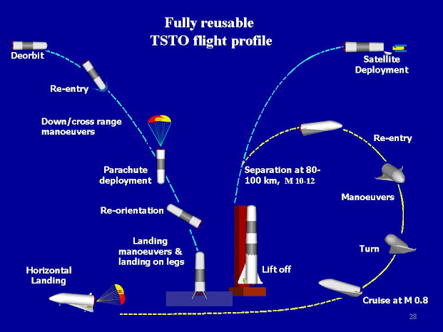
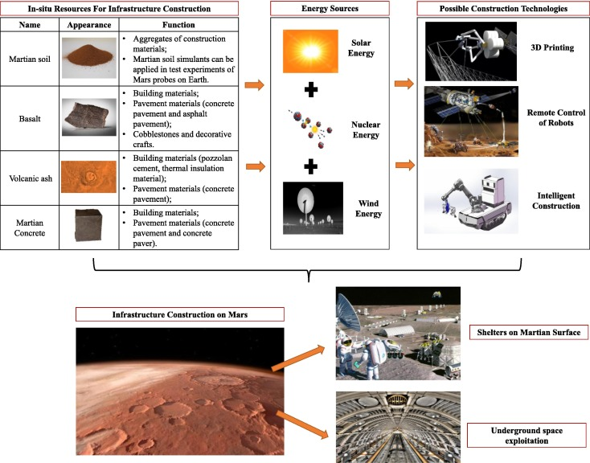

Transportation and Logistics
The success of Mars colonization is heavily reliant on the development of efficient transportation systems to ferry personnel and supplies between Earth and Mars. Innovations in rocket propulsion and spacecraft design are critical to reducing travel times and costs. Reusable launch systems and spacecraft, as highlighted by recent advancements, are expected to play a pivotal role in making Mars missions economically feasible and sustainable.
Robotic Preparations
Before human settlers arrive, robotic missions will lay the groundwork for future colonization. These missions involve the deployment of intelligent robots designed for construction, exploration, and environmental testing. Robots will handle tasks deemed too dangerous or impractical for humans, such as preliminary habitat construction and critical infrastructure setup, ensuring that the environment is habitable upon human arrival.
Resource Management
Effective management of resources is paramount for the sustainability of a Mars colony. This involves the utilization of Martian natural resources, such as extracting water from the soil and processing atmospheric CO2 into usable oxygen and carbon materials. These processes are essential not only for providing life support but also for creating building materials and fuel, reducing the dependence on Earth-based supplies.
